Все известные новости на 30.04 2023
ЧТО ЭТО, ДАТА ВЫХОДА И ВСЁ,
ЧТО СЛЕДУЕТ ЗНАТЬ.
The Seven Deadly Sins: Origin - это предстоящая gacha-игра 2023 года, выполненная в стиле
культового аниме
"The Seven Deadly Sins" и схожая с такими играми как Genshin Impact, Zelda
и т.п.
1-ый трейлер
Об игре
История в The Seven Deadly Sins: Origin является продолжением другой игры The Seven Deadly Sins: Grand Cross, созданная компанией Netmarble.
Netmarble Corp. — Это крупнейшая в Южной Корее компания мобильных игр, основанная в 2000 году Бан Джун Хёком.
Тристан - это главный персонаж, с которого начнётся сюжет игры. Он также является сыном Мелиодаса и Элизабет, принцом Королевства Лионес и членом 4 Рыцарей Апокалипсиса(Чума). Тристан - очень энергичный и упорный. Он выражает неуважение к роли принца, вместо этого предпочитая защищать свое королевство как Святой Рыцарь.
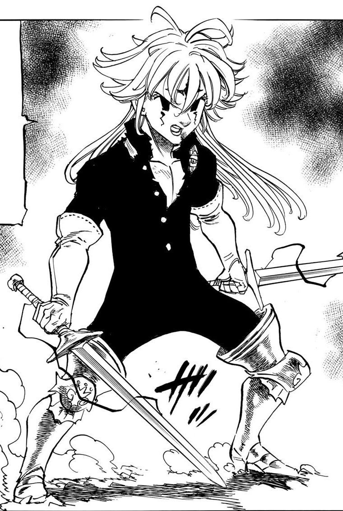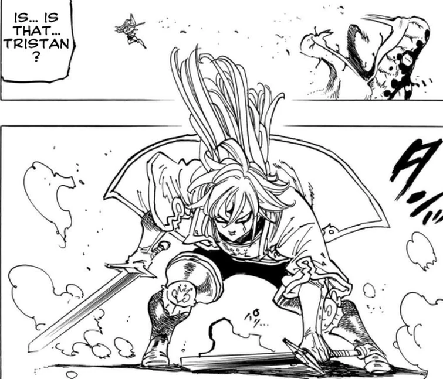2-ой трейлер
В первой половине 2023 года было опубликовано достаточно информации, чтобы иметь первое представление о грядущей игре:
Замок Лионес
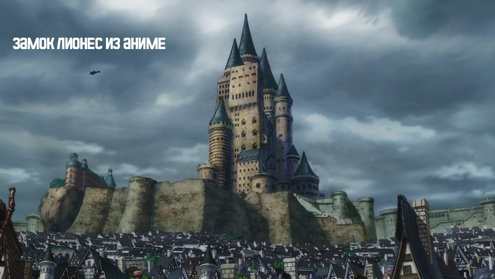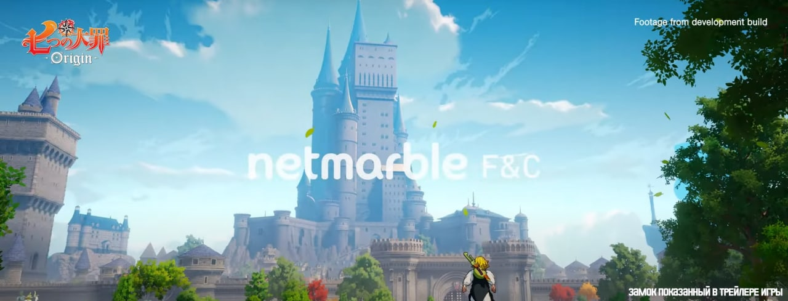Королевство Камелот
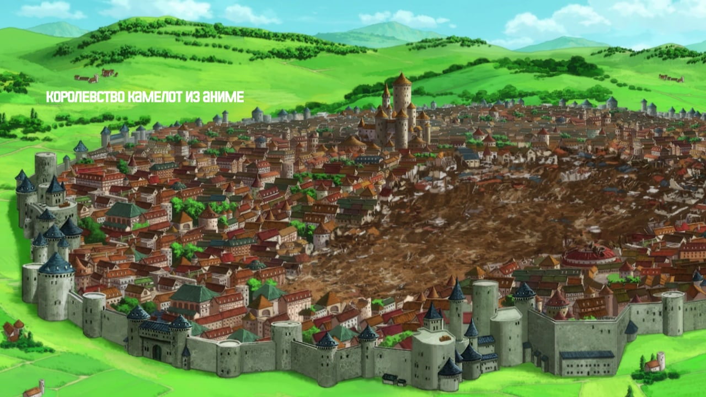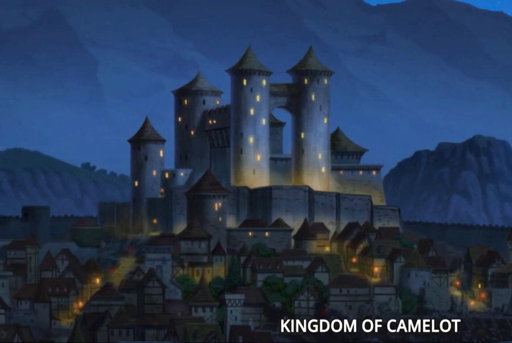Лионес является самым большым и сильным королевством, можно предположить, что это и будет наша стартовая локация.
Однако, Лионес не единственное королевство которое существует в лоре Семи смертных грехов, на территории Британии есть ещё Камелот, который принадлежит Королю Артуру. (Кастеллио, Данафор, Эдинбург, были разрушены), а так же большое количество деревень и лесов.
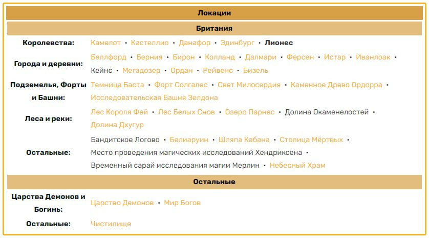Не стоит забывать, что разработчики придерживаются сюжету аниме и манги Семи смертных грехов, вполне возможно, что эти локации будут добавлены в будущих обновлениях игры.
Также, в одном из трейлеров игры нам на несколько секунд показали парящие острова.
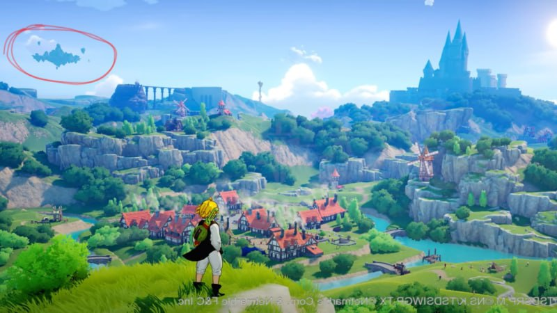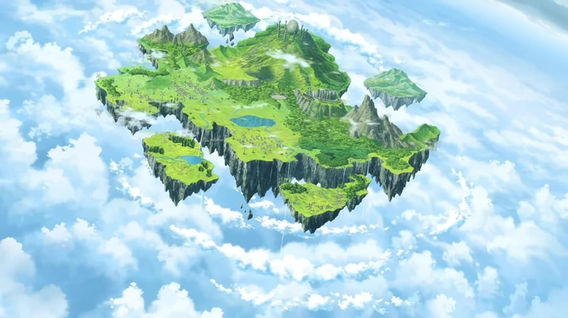Этим островам посвящён целый фильм под названием "Семь смертных грехов: Узники небес", а так же о них идут другие упоминания в аниме и манге. Это место называется "Небесный храм", оно относится к небесному царству и является домом для Небесного клана. Попасть в него можно только через портал в виде озера, которое спрятано где-то на территории Британии.
Интервью
Редакция GameWith провела эксклюзивное интервью с генеральным продюсером Ку До Хёном касательно будущего «The Seven Deadly Sins: Origin»:
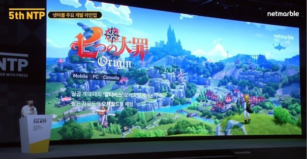Сейчас продолжается активная разработка «The Seven Deadly Sins: Origin» параллельно с «Grand Cross» той же студии, однако, поскольку команды разные, это не будет приводить к задержкам обновлений.
Генеральный продюсер Ку До Хён ожидал, что игру будут сравнивать с «The Legend of Zelda» или «Genshin Impact», однако он заявил, что несмотря на многие сходства в отношении открытого игрового мира, боевая система в «Origin» будет существенно отличаться от вышеперечисленных игр.
В «Origin» планируется представить совершенно оригинальную историю, которая будет лишена многих недостатков «Рагнарека» и учитывать накопленный опыт в «Grand Cross». Она должна будет максимально гармонично вписываться в сеттинг открытого мира игры.
Размер карты
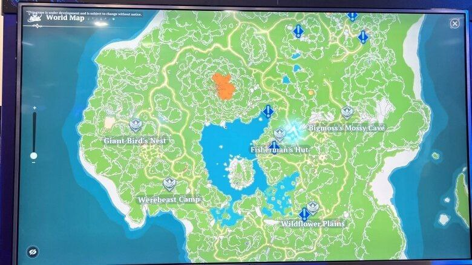Дата выхода
На данный момент нет точной информации по этому поводу, компания Netmarble объявила ПРИМЕРНЫЙ промежуток времени выхода игры: первая половния 2023 года, только есть одно НО:
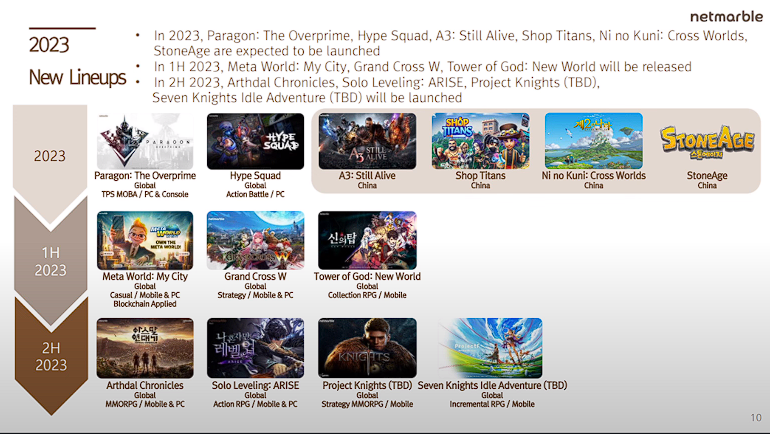В списке предстоящих игр от Netmarble ничего не говорится о "Семи Смертных Грехах", возможно, так разработчики мягко намекают на продление срока выхода проекта, всвязи с некоторыми затруднениями. Каковы причины трудностей - увы, пока что неизвестно.
Где установить
T7DS:Origin выйдет на блокчейн платформе FNCY, которая принадлежит Netmarble. Об этом говорит баннер, который появился на главной странице.
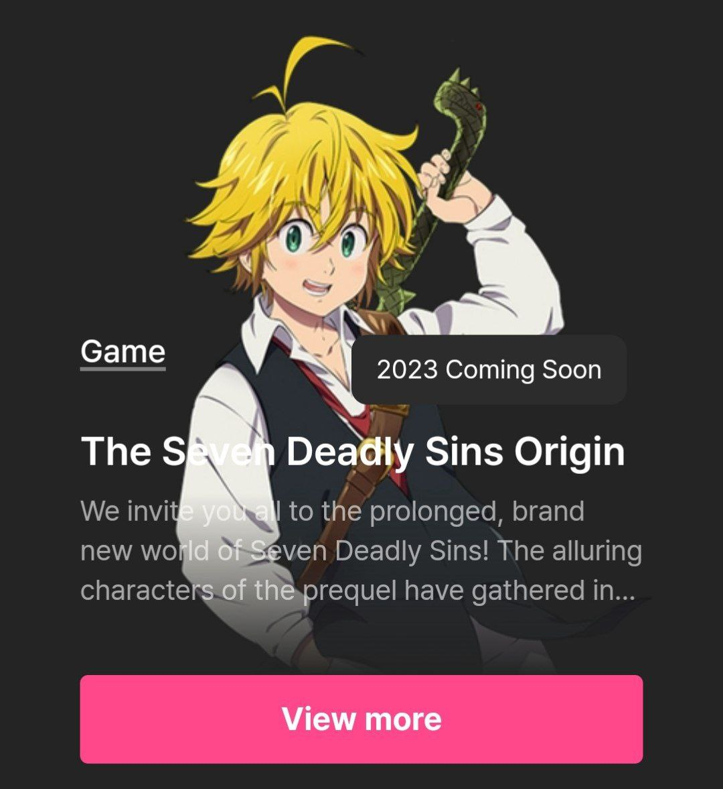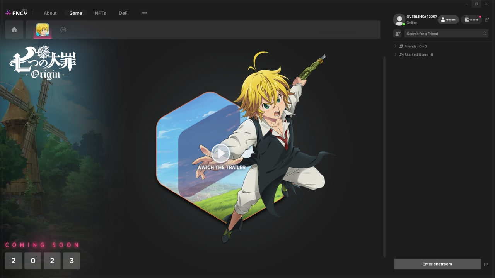Лаунчер уже можно загрузить на PC
Для начала нужно зарегистрироваться на FNCY любым удобным способом.
После этого скачать клиент для PC по этой ссылке.
Установить лаунчер и зайти в свой аккаунт.
Через поиск найти игру и добавить в избранное (нажать на плюсик возле иконки домика).
Готово! Теперь остаётся ждать выхода самой игры.
Дополнительно
С выставки "GDC 2023" утекли настоящие 30 минут геймплея.
В нём задеты такие
вещи как:
Механика плавания.
Переключение персонажей.
Раскрытие побочных персонажей "маунтов".
И непосредственно сам геймплей.